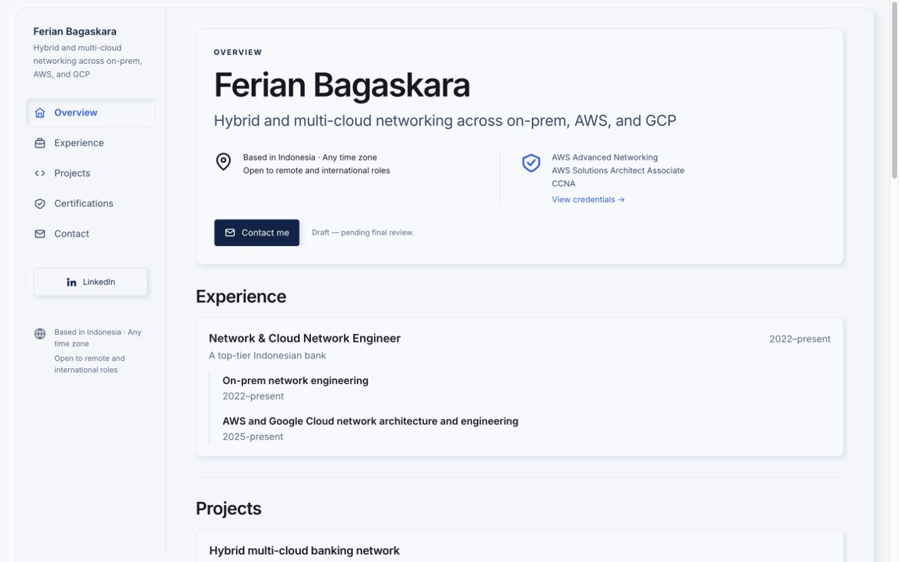
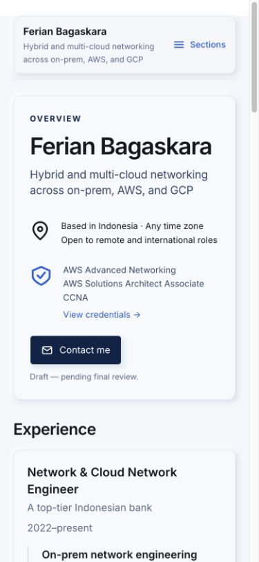

Portfolio neumorphism review
These screenshots show the actual Astro build tested on 8 October 2026. Content and interactions are supplied by the existing application.
Open the interactive local preview while the preview server is running. See QC notes for the tested scope.
Desktop

Mobile
